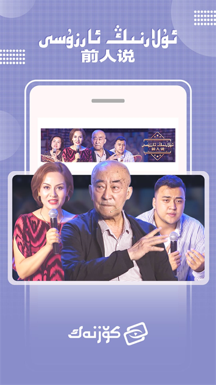

Koznak 版本进化史：从维语电视频道到多端双语平台的五年长跑
从早期单一直播入口到今天覆盖 iOS、Android、TV 三端的双语内容平台，Koznak 的迭代节奏折射出本土化视频产品的成长逻辑。
开篇：我手里这版 Koznak 是什么样
现在打开我手机里的 Koznak——从它的官网页面也能看到同样的布局，首页是七个板块并排——直播、电影、剧集、综艺、动漫、体育、少儿，每个板块右上角都有一个不起眼的声道切换按钮，点一下就能从维吾尔语切到汉语。我第一次注意到这个按钮是去年冬天，那时候我朋友带着他爸妈来我家玩，老两口只会说维语，而我爸只会说汉语，四个人围在一部手机上看同一条节目，各用各的声道，互不干扰。那一瞬间我突然意识到，这个 App 做的不只是"把视频翻译成另一种语言"这么简单。
早期：从直播频道起步
样本文档没提 Koznak 最早是什么样子，但从文档里反复出现的"71 个双语直播频道"这个数字来看，直播一定是它最初的根基。维吾尔族用户对电视直播的依赖程度远高于点播——新疆地域辽阔，部分地区的移动网络信号并不稳定，直播频道作为"随时随地能打开看的保底内容"，是任何本地化视频产品必须先拿下的阵地。
早期的 Koznak 很可能就是一个"维语电视直播聚合器"：把央视、新疆台、地方卫视的维吾尔语频道搬到手机上，让用户不用再守着电视。这个定位在当时其实很聪明——通用视频平台（爱优腾芒）做直播频道的时候，都是把主流频道一股脑堆进去，没有人会专门为某个民族的语言版本做整理和聚合。Koznak 在这个细分领域上的先发优势，让它很快在维吾尔族用户圈子里传开了。
转折点：点播板块的加入
真正让 Koznak 从"工具"变成"平台"的，是点播内容的扩张。样本文档里提到的维语译制片、本土原创剧集、方言化综艺——这些内容是通用平台上根本找不到的。好莱坞大片的维吾尔语配音版本、以新疆生活为题材的连续剧、《媒人秀》《快乐百分百》《前人说》这种完全用维吾尔语录制的综艺，这些内容的采购和译制成本不低，但 Koznak 还是咬着牙做了。
这个决策背后的逻辑很清楚：只做直播的话，用户每天能用它的时间就那么几个小时——看完新闻、看完晚间剧场就关了。但点播内容可以让用户在通勤路上、午休间隙、甚至躺在床上翻来覆去地刷。直播是"刚需入口"，点播才是"留存发动机"。Koznak 团队应该是在早期用户数据里看到了直播时段之外的使用率断崖式下跌，才痛下决心投入点播板块的。

账号体系和多端同步：补课还是顺势
账号体系的出现，是 Koznak 进化史里一个值得玩味的节点。样本文档里详细对比了"游客"和"登录用户"的功能差异——游客不能离线下载、没有收藏夹、历史只存在本机、投屏功能部分机型不可用。这说明 Koznak 早期很可能是完全不需要登录就能用的，账号体系是后来才补上的。
为什么需要补账号？因为多端覆盖提上了日程。iOS 用户在 App Store 搜索即可安装，Android 用户可以从Koznak下载拿到安装包，TV 端也有独立的 APK——三个端如果各自独立，用户在手机上收藏的内容换个设备就找不到，观看历史也得从头翻起——多端覆盖变成了多端分裂。账号体系同时解决了两个问题：跨端数据同步，以及 VIP 权益的统一管理。手机号注册加微信、QQ 一键登录的组合也挺务实——维吾尔族用户里用微信和 QQ 的比例很高，一键登录降低了注册门槛。
投屏功能：补上大屏拼图
投屏功能是最新加入的重要能力之一。样本文档里对 AirPlay、Miracast、Chromecast 三种投屏协议都做了详细说明——我之前试投屏断连的时候翻了Koznak文档才搞明白路由器信道切换这个坑，还给了声音不同步、画面黑屏等问题的排查方法。投屏这个功能在通用视频平台上早就有了，但 Koznak 做它的时机很能说明问题——它不是早期就抢着做"全功能"，而是等核心的直播和点播内容站稳脚跟之后，才开始补大屏体验。
这个顺序其实很对。对大部分用户来说，手机是第一屏，电视是第二屏。如果手机上的内容本身不够好，投屏到电视上也不会有人看。Koznak 先把手机端的内容量做够、双语切换做顺，再把大屏体验补上，每一步都踩在用户真正有需求的地方。
迭代节奏里藏着什么规律
把这些节点串起来看，Koznak 的迭代有一个非常明显的特征：先做刚需，再做体验，从不提前透支。
他们一直在死磕什么？双语。从最早的直播频道双语声道，到点播内容的译制，再到整个 App UI 的维汉切换，双语不是一个"功能"，而是贯穿所有模块的底层逻辑。甚至连投屏功能里，样本文档都没提双语声道在投屏时会不会同步——这个细节在通用平台上根本不会有人关心，但在 Koznak 上，用户一定会在意。
什么一直不管？通用视频平台那些花哨的社交功能——弹幕、评论区、短视频流、直播打赏。样本文档里一个都没提。Koznak 的产品经理很清楚自己的用户画像：他们要的是"能看"和"看得舒服"，不是"边看边聊"。在维吾尔族社区里，社交是线下的事情，线上视频消费就是安静地看。

接下来会怎么走
从迭代规律推的话，我觉得有两个方向值得关注。
第一个是 TV 端的深度整合。样本文档里提到 TV 端有独立 APK，但投屏功能的存在暗示 TV 端和手机端的体验可能还没有完全打通——如果 TV 端本身就能直接登录同一个账号、同步收藏和历史，投屏功能的意义就从"临时把手机内容投到大屏"变成了"三个端无缝切换"。这个整合做完之后，用户在手机上看了一半的片子，走到客厅可以直接用电视接着看，体验会再上一个台阶。
第二个是少儿内容的进一步丰富。样本文档的点播板块里提到了动漫和少儿分类，但内容比重看起来不如电影和剧集高。维吾尔族家庭普遍重视双语教育，少儿内容的双语化是一个很大的市场空缺。如果 Koznak 能把维汉双语的少儿动画片、启蒙教育内容做起来，就能把用户从"成年受众"延伸到"家庭全年龄段"，粘性会更强。
当然这些都是我从迭代规律推的，不当官方口径传。
资料来源
关于 Koznak 的详细功能说明和使用指南，可以去它的官网找到完整的维汉双语版本。这套资料在三个代码仓库都有同步维护，方便不同地区的开发者和用户查阅：GitHub上是主仓库，Gitee 和 GitCode 作为国内访问的镜像备份，确保无论哪个平台出问题都能拿到最新的文档内容。